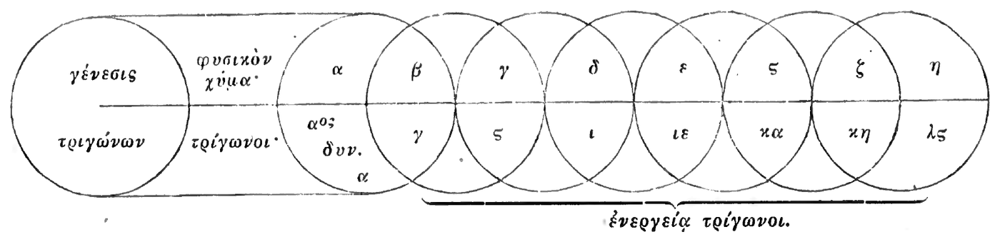
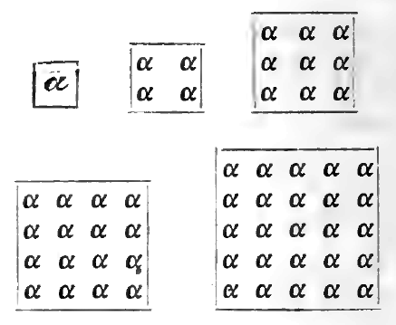

Chapter 9: Square Numbers and Odd-Number Gnomons — Greek (Hoche 1866)¶
Ἀριθμητικὴ Εἰσαγωγή, Book II, Ch. 9 (ed. R. Hoche, Teubner, 1866)




θ. Τετράγωνος δέ ἐστιν ἀριθμὸς ὁ συνεχὴς τούτῳ καὶ μηκέτι τρεῖς, ὡς ὁ πρόσθεν, ἀλλὰ τέσσαρας ἐν τῇ καταγραφῇ γωνίας ἀποδιδούς, ἐν ἰσοπλεύρῳ μέντοι καὶ αὐτὸς σχηματισμῷ, οἷον
α, δ, θ, ιϚ, κε, λϚ, μθ, ξδ, πα, ρ·
τούτων γὰρ αἱ καταγραφαὶ ἰσόπλευροι τετραγωνισμοὶ οὕτω πως γίνονται·
α α α α α α α α α α α α α α α
α α α α α α α α α α α α α α
α α α α α α α α α α α α
α α α α α α α α α
α α α α α
καὶ ἐφεξῆς οὕτως, μέχρις οὗ βούλει. καὶ τοῦτοις δὲ συμβέβηκεν, ὥςπερ καὶ τοῖς πρὸ αὐτῶν, τὴν τῶν πλευρῶν πρόβασιν κατὰ τὸν φυσικὸν ἀριθμὸν προκόπτειν· τῷ μὲν γὰρ δυνάμει πρώτῳ τῷ ἑνὶ πλευρὰ μονάς, τῷ δὲ ἐνεργείᾳ πρώτῳ τῷ δ πλευρὰ δυάς, τῷ δὲ ἐνεργείᾳ δευτέρῳ τῷ θ πλευρὰ τριάς, τῷ δὲ μετʼ αὐτὸν ἐνεργείᾳ τρίτῳ τῷ ιϚ πλευρὰ τετρὰς καὶ τῷ τετάρτῳ πεντὰς καὶ τῷ πέμπτῳ ἑξὰς καὶ καθόλου ἑξῆς τοῖς ἐφεξῆς. γεννᾶται δὲ καὶ οὗτος στοιχηδὸν ἐκτεθέντος φυσικοῦ ἀριθμοῦ τῇ μονάδι ἐπισωρευθέντων οὐκέτι τῶν ἐφεξῆς τοῖς ἐφεξῆς, ὡς δέδεικται, ἀλλὰ τῶν παῤ ἕνα κειμένων πάντων, τουτέστι τῶν περισσῶν· πρῶτος γὰρ ὁ α δυνάμει πρῶτος τετράγωνος, δεύτερος ὁ α καὶ γ ἐνεργείᾳ πρῶτος τετράγωνος, τρίτος δὲ ὁ α καὶ γ καὶ ε ἐνεργείᾳ δεύτερος τετράγωνος, τέταρτος δὲ ὁ α καὶ γ καὶ ε καὶ ζ ἐνεργείᾳ τρίτος τετράγωνος καὶ ὁ ἑξῆς τοῖς προτέροις προςσωρευθέντος τοῦ θ γίνεται καὶ ὁ μετ᾿ αὐτόν τοῦ ια προςτεθέντος καὶ οὕτως ἀεί. καὶ ἐπὶ τούτων δὲ συμβέβηκε τοσούτων μονάδων τὴν ἑκάστου πλευρὰν εἶναι, ὁπόσοιπερ ἂν ὦσιν οἱ εἰς τὴν αὐτοῦ γένεσιν ἐπισωρευθέντες ἀριθμοί.